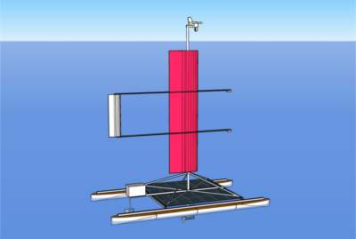

Raider 2
Raider 2 is an ultralight solar and wind powered unmanned surface vehicle (USV) designed for oceangoing missions.
ArduPilot based autopilot supports waipoints guidance, sensor based guidance, and station keeping. It is equipped with Iridium satellite shirt burst data (SBD) transceiver for long-range, 915 Mhz radio-telemetry transciver for short-range, and cellular data modem for close to shore communications.
The USV can accomodate up to 30 lbs. of custom, mission-dependent load.

Specification
| Displacenemt: | 120 lbs. |
| Length Overall: | 8.75 ft. |
| Beam Width: | 2.5 ft. |
| Draft: | 2 ft. |
| Disassembled Dimensions: | 9 x 2.5 x 1.5 ft. |
| Wing Sail Area: | 9 ft.² (1.5 x 6 ft.) |
| Solar Panels: | 2 x 100 Watt |
| Battery: | Lithium-ion, 500 Watt-hours |
| Engine Max Power: | 130 Watts |
| Top Speed Under Engine: | 3.5 Knots |
| Cruise Speed Under Engine: | 2 Knots |
Sail Propulsion Laboratory
Sail Propulsion Laboratory is a prototyping platform for testing solar and wind powered autonomous boats.
The USV will also be used for Salton Sea water quality monitoring.
Specification
| Length Overall: | 8 ft. |
| Beam Width: | 4.5 ft. |
| Draft: | 1 ft. |
| Displacement: | 100 lbs |
| Wingsail Area: | 9 ft² |
| Solar Panels: | 2 x 100 watts, 14 ft² (1.3 m²) |
| Electric Engine: | 135 watts max power, 5.2 lbf thrust |
| Cruising Speed: | 2 knots |